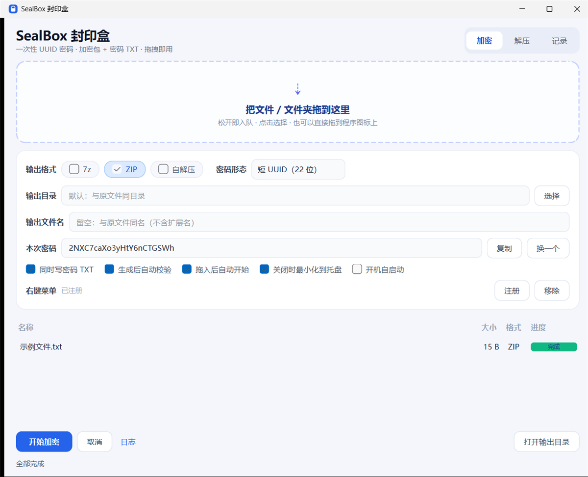
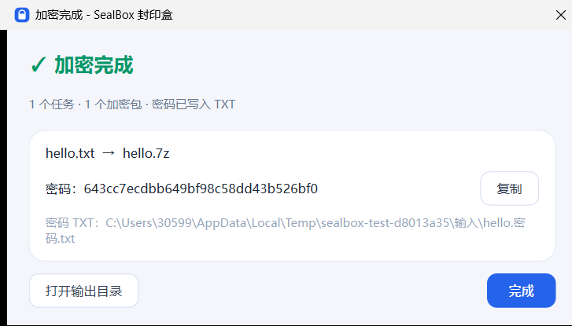
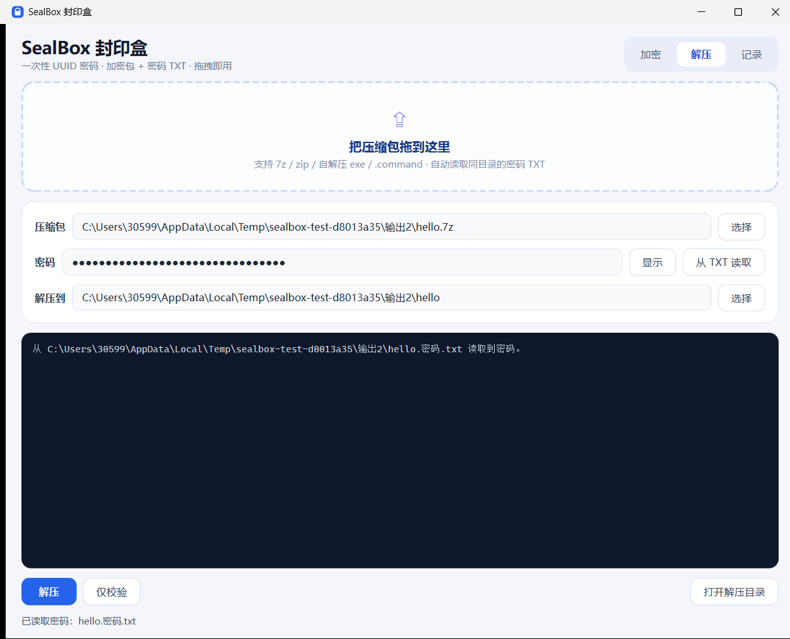

把文件或文件夹拖进窗口，生成一个一次性的 UUID 密码，压缩包与密码 TXT 同时产出： 7z（内容与文件名同时加密）、ZIP（AES-256）、自解压程序。
| 能力 | 说明 |
|---|---|
| 一次性密码 | 每次任务用 uuid4 生成，默认短 UUID（22 位、大小写混合、约 122 bit 熵），不复用；也可选 32 位十六进制等形态。 |
| 三种加密包 | 7z：AES-256 + 头加密，连文件名都看不到；ZIP：AES-256，但文件名可见；自解压：Windows 出 exe，macOS/Linux 出脚本。 |
| 密码 TXT | 自动写出 <名称>.密码.txt，含密码、格式、大小、SHA-256、解压命令。 |
| 拖拽即用 | 文件/文件夹拖进窗口；也可以直接拖到程序图标上，程序会打开并预置任务。 |
| 压缩记录 | 记录原名 → 包名、密码、大小、SHA-256，可复制、打开位置、导出 CSV。 |
| 右键菜单 | Windows 文件/文件夹/空白处：单个入口「SealBox 加密 / 解压…」，打开窗口后选格式。 |
| 托盘与自启 | 关闭最小化到托盘；开机自启动后静默驻留托盘。 |
| 全局单实例 | 同一用户只允许一个实例；再次双击会把任务投递进已开窗口的队列并唤醒窗口，不新开进程。 |
| 命令行 | --seal / --extract / --verify，可脚本化、可 --json。 |
SealBoxSetup-0.1.0.exe，按向导下一步。%LOCALAPPDATA%\Programs\SealBox，不需要管理员权限。SealBox-0.1.0-macos-arm64.dmg。SealBox.app 拖到 Applications 文件夹。sudo apt install ./sealbox_0.1.0_amd64.deb
sealbox安装后应用菜单里会出现 SealBox；卸载用 sudo apt remove sealbox。
不想安装也可以用下面的 zip，解压即用。
SealBox-win64.zip，得到两个目录：SealBox\（窗口版）与 SealBoxCLI\（命令行版）。SealBox\SealBox.exe。目录里的 _internal 是运行库，不能删、不能单独移动，要搬就整个文件夹一起搬。SealBox-macos-arm64.zip，得到 SealBox.app 与 SealBoxCLI/。xattr -dr com.apple.quarantine SealBox.appSealBox-linux-x64.zip，得到 SealBox/ 与 SealBoxCLI/。chmod +x SealBox/SealBox SealBoxCLI/SealBoxCLI
./SealBox/SealBox./SealBoxCLI/SealBoxCLI --check。
| 区域 | 说明 |
|---|---|
| 拖拽区 | 文件、文件夹都可以拖进来；点一下也可以打开选择框。拖到程序图标上同样有效。 |
| 输出格式 | 7z / ZIP（默认）/ 自解压，可多选；多选会一次产出多个包，共用同一密码。 |
| 密码形态 | 短 UUID（22 位，默认，大小写混合）/ 32 位十六进制 / 标准 UUID / UUID + 32 位随机。 |
| 输出目录 | 留空 = 与原文件同目录；不会覆盖同名文件，自动加「 (2)」。 |
| 输出文件名 | 可选；留空则与原文件同名（不含扩展名）。只影响输出，不改原文件。 |
| 右键菜单 | 显示注册状态，点「注册」/「移除」即可，不需要命令行。 |
| 本次密码 | 显示当前密码，可「复制」「换一个」。换一个会同步到队列里还没开始的任务。 |
| 队列 | 每行一个任务，显示名称、大小、格式、进度；失败时进度条变红，鼠标悬停可看原因。 |
| 开始 / 取消 | 「拖入后自动开始」默认勾选；取消会终止当前任务并清空未开始的任务。 |

报告.docx → 报告.zip + 报告.密码.txt。资料\ → 资料.zip（包内保留 资料/ 这一层）。a.txt、b.txt → a.zip，包内是这两个文件。.exe；macOS .command；Linux .run。TXT 内容示例：
========================================
SealBox 加密包信息
========================================
生成时间 : 2026-11-12 09:40:12 +0800
密码 : 7Kq2mXv9Rt4Yb8Nc3Hd6Jf
密码形态 : 短 UUID（22 位，约 122 bit 熵）
----------------------------------------
加密包 : 报告.zip
格式 : ZIP（AES-256，文件名不加密）
大小 : 1,234,567 字节
SHA-256 : 9c1f...
解压 : 7z x -p"密码" "报告.zip"
----------------------------------------
安全提示 : 密码与压缩包请分渠道发送；放在同一目录等于没有加密。
========================================600（仅本人可读）。
<名称>.密码.txt。.7z / .zip / 自解压文件拖进「解压」页，或点「选择」。| 平台 | 记录文件位置 |
|---|---|
| Windows | %APPDATA%\SealBox\history.jsonl |
| macOS / Linux | ~/.sealbox/history.jsonl |
在窗口「右键菜单」一行点「注册」即可；也可以命令行：
SealBoxCLI\SealBoxCLI.exe --install-menu
SealBoxCLI\SealBoxCLI.exe --uninstall-menu
SealBoxCLI\SealBoxCLI.exe --menu-status--menu-status 自检，再注销/重登。SealBoxCLI --install-menu 安装 Finder 快速操作（实验性，未实机验证）。--tray 静默启动，只驻留托盘。也可以命令行控制：
SealBoxCLI --autostart enable
SealBoxCLI --autostart status
SealBoxCLI --autostart disable| 命令 | 作用 |
|---|---|
SealBoxCLI --check | 检查 7-Zip、Qt 与自解压模块是否就绪 |
SealBoxCLI --seal --cli 报告.docx | 加密为 ZIP（默认） |
SealBoxCLI --seal --cli --format all 资料\ | 同时出 7z + ZIP + 自解压 |
SealBoxCLI --seal --cli --out D:\包 文件 | 指定输出目录 |
SealBoxCLI --extract --cli 备份.7z --pwd 密码 | 手动输入解压密码（加密模式禁用 --pwd） |
SealBoxCLI --extract --cli 备份.7z --out 输出\ | 解压（自动读同目录密码 TXT） |
SealBoxCLI --verify --cli 备份.7z | 只校验，不解压 |
SealBoxCLI --seal --cli --json 文件 | 输出机器可读 JSON |
SealBoxCLI。整个目录要一起保留，_internal 不能删。若从压缩包只拖出了 exe，请重新完整解压。
窗口里点「注册」；仍不显示就执行 --uninstall-menu 再 --install-menu，或注销重登。Win10 可用 --menu-status 查看每个键和启动器路径。
先核对 TXT 与压缩包是否配对（同名）；再确认输入法没有把全角字符带进去。7z 一旦密码错误无法恢复。
这是 ZIP 格式本身的限制，不是程序问题。需要隐藏文件名请用 7z。
xattr -dr com.apple.quarantine SealBox.app或 Finder 右键 →「打开」。首次之后不再提示。
exe 未做代码签名，属正常现象。介意的话改用 7z 包，让对方用 7-Zip 打开。
默认压缩级别 9。命令行走 --level 5 可明显加速；SSD 与文件类型也会影响速度。
不能。7z / ZIP 的 AES-256 没有后门，只能靠密码或 TXT 里的记录。
| 平台 | 解压后结构 | 主程序 |
|---|---|---|
| Windows | SealBox\ + SealBoxCLI\ | SealBox\SealBox.exe |
| macOS | SealBox.app + SealBoxCLI\ | SealBox.app |
| Linux | SealBox\ + SealBoxCLI\ | SealBox/SealBox |
| 差异点 | 说明 |
|---|---|
| 自解压形式 | Windows 为 .exe（7z.sfx）；macOS 为 .command；Linux 为 .run，都需要系统有 7zz 或 7z。 |
| 右键菜单 | Windows 注册表；macOS Finder 快速操作；Linux 文件管理器脚本。 |
| 开机自启 | 登录项 / LaunchAgent / autostart 三种实现。 |
| 签名 | Windows 与 macOS 均未做商业签名，首次运行有安全提示。 |
SealBox 封印盒 0.1.0 · 内置 7-Zip 24.09（LGPL）· 项目地址 https://github.com/789564321/sealbox